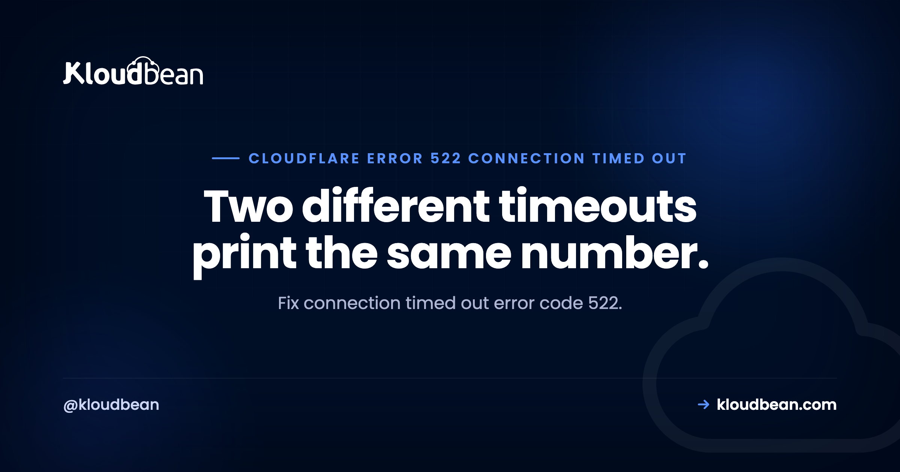

Connection Timed Out Error Code 522: Which Clock Ran Out?

Almost every guide to connection timed out error code 522 tells you to check your firewall, and then stops. That advice is right about half the time. The reason it fails the other half is that 522 is not one failure. Cloudflare uses the same number for two completely different events on two separate clocks, and which one expired points at opposite ends of your stack. Work that out first and you skip most of the guessing.
Cloudflare could not complete a TCP connection to your origin server. Per Cloudflare's documentation there are two timeouts behind the one code: before a connection exists, it gives up if no SYN+ACK arrives within 19 seconds of its SYN; once connected, it gives up if the request is not acknowledged within 90 seconds. The 19-second case means packets are being dropped, so look at cloud security groups, host firewall rules, and a full listen backlog. The 90-second case means the connection worked and your application never replied. Cloudflare names blocked or rate-limited Cloudflare IP ranges as the single most common cause.
Two clocks, one error code
This is the distinction the other guides skip, and it's in Cloudflare's own docs. A 522 is emitted when either of two timers runs out, and they fail at different stages.
| The 19-second clock | The 90-second clock | |
|---|---|---|
| When | Before a TCP connection exists | After the connection is established |
| What Cloudflare waited for | A SYN+ACK answering its SYN | An acknowledgment of its request |
| What it proves | Nothing came back at all | The handshake worked, the app went quiet |
| Investigate | Packet filtering, security groups, listen backlog, an offline origin | Application workers, keepalives, resource exhaustion |
Where does 19 seconds come from? Cloudflare retries the SYN with a backoff of 1, 1, 1, 1, 1, 2, 4, and 8 seconds. Add those up and you get 19. That's worth knowing because it tells you Cloudflare tried eight times before giving up, so an intermittent 522 means your origin ignored eight consecutive attempts across nineteen seconds. That's not a blip. Something is genuinely wrong.
Ask one question first: constant or intermittent?
Before touching anything, establish whether every request fails or only some. This single answer eliminates half the causes below, and it's free.
| Pattern | Almost always | Skip |
|---|---|---|
| Every request, immediately after a change | Configuration: a firewall rule, a wrong origin IP | Capacity work |
| Every request, no change made | The origin is down, or its address moved | Cloudflare settings |
| Some requests, worse under traffic | Capacity: listen backlog, connection tracking, workers | Firewall rules |
| Some requests, specific URLs only | Slow endpoints holding workers open | Network layer |
That last row has a shortcut. Cloudflare's Origin Analytics reports TCP connection failures per endpoint, so if the failure rate concentrates on a few paths, the problem is those paths and not your network. It's the fastest way to tell "my server is broken" from "one slow report is eating every worker".
The constant case: something is dropping packets in silence
Why this is 522 and not 521. Here's the mechanical detail that makes firewall rules make sense. A rule that uses DROP discards the packet and sends nothing back, so Cloudflare waits out all 19 seconds and reports 522. The very same rule written with REJECT sends a refusal immediately, and Cloudflare reports 521 instead. Identical intent, different error code, entirely because of one word. Check which yours uses:
sudo iptables -L INPUT -n --line-numbers | grep -E 'DROP|REJECT'
# On a Shorewall host the compiled result is still visible here.Check the layer above your server, because it drops silently too. This is the one that wastes afternoons. Cloud provider firewalls sit in front of the host, and nothing you do inside the machine can override them. A security group or network ACL that doesn't allow Cloudflare's ranges on 443 will discard the traffic before your host firewall ever sees it, and your host logs will show nothing at all, because nothing arrived. If your host firewall looks correct and packets still vanish, go up a level.
Confirm the origin actually answers, bypassing Cloudflare entirely. This is the single most useful command on the page, because it splits "my server is broken" from "Cloudflare cannot reach my working server":
# Ask your origin directly, with the right Host header and SNI
curl -sS -o /dev/null -w "%{http_code}\n" --max-time 20 \
--resolve example.com:443:203.0.113.10 https://example.com/A status code means your server is fine and the path from Cloudflare to it is the problem. A hang means the origin itself is not accepting connections, and Cloudflare is only reporting what it found.
Is your allowlist stale? Cloudflare publishes its ranges at cloudflare.com/ips and the list changes. An allowlist copied into .htaccess or iptables two years ago will be missing addresses today, which produces the maddening version of this bug: most requests work, some fail, depending which edge machine served them. Cloudflare names blocked or rate-limited ranges as the most common cause of 522 overall. The 521 guide covers allowlisting and the Fail2ban trap in detail, and both apply here unchanged.
Does the origin IP in your DNS still exist? Cloudflare connects to whatever address your DNS record holds. Rebuild a server, resize an instance, or migrate a host, and that address can change while the record stays put. Cloudflare then dutifully tries an address nobody is listening on for 19 seconds. Compare the record against the address your provider currently shows for the machine. It takes ten seconds and it's a surprisingly common answer after any migration.
The intermittent case: capacity, not configuration
If some requests succeed, your firewall is fine. Stop looking at it. What you're seeing is a server that accepts connections until it can't.
The listen backlog is full. Every listening socket has a queue of connections waiting to be accepted. When the application can't accept them fast enough, the queue fills and further SYN packets are dropped, silently, exactly like a firewall would. Cloudflare cannot tell the difference. Look at the Send-Q column, which shows the backlog limit, and watch for overflow counters climbing:
ss -ltn # Recv-Q is the current queue, Send-Q the limit
netstat -s | grep -i listen # "listen queue overflowed" means you found itA climbing overflow counter is a definite answer, not a hint. The fix is either more workers or faster handlers, not a bigger queue, because a longer queue only delays the same failure.
The connection tracking table is full. Less known and very satisfying to find. A Linux host with a stateful firewall tracks every connection in a fixed-size table. When that table fills, new connections are dropped and the kernel logs it plainly:
cat /proc/sys/net/netfilter/nf_conntrack_count
cat /proc/sys/net/netfilter/nf_conntrack_max
dmesg | grep -i conntrack # "table full, dropping packet" is unambiguousIf count sits near max, you've found your intermittent 522. This also explains 522s that appear only during traffic peaks and vanish afterwards with nothing in the web server log, because the request never reached the web server.
Keepalives are disabled at the origin. Cloudflare reuses open TCP connections rather than building a new one per request, and it documents disabled origin keepalives as a cause of 522. With keepalives off, every request needs a fresh handshake, which multiplies connection load and makes backlog exhaustion far easier to hit. If you disabled keepalive to "save memory" at some point, that trade is working against you here.
The Cloudflare-side causes almost nobody mentions
These are documented and genuinely obscure. If your origin is healthy and your firewall is open, one of them may be your answer.
A Worker fetching its own hostname. If you use Workers with a Custom Domain and the Worker performs a fetch to its own hostname, you get 522. The request loops back into the edge instead of reaching an origin. Cloudflare's fixes: use a Route instead of a Custom Domain, fetch a different hostname, or enable the global_fetch_strictly_public compatibility flag. Worth checking before you touch a single firewall rule, because no amount of server work fixes it.
An Origin Rule pointing somewhere unresolvable. Origin Rules rewrite the hostname Cloudflare connects to. If the result doesn't resolve, or resolves to a reserved address such as 192.0.2.0 or 100::, the connection has nowhere to go and you get 522. Reserved ranges are easy to end up with in a placeholder record that was never replaced.
Cloudflare Pages without a proper custom domain. On Pages, confirm the custom domain is configured and the CNAME points at your custom Pages domain rather than something else.
What not to do
Don't start toggling Cloudflare settings. Development mode, cache purges, and Rocket Loader have nothing to do with a TCP connection that never completed. Cloudflare's own engineering write-up on this class of problem puts the cause most often at the origin being slow, offline, or losing packets, and less often at their end. Changing edge features to fix a handshake is motion, not progress.
Don't raise a timeout to make 522 go away. The connect timeout isn't yours to raise, and the 90-second one is long enough that hitting it means something is genuinely stuck. If a request legitimately needs more than 90 seconds, it shouldn't be an HTTP request. Move it to a background job and return immediately.
Don't confuse 522 with 524 or 504. They feel the same to a visitor and have unrelated causes. 522 means the connection failed. 504 and 524 mean the connection worked and the response was too slow. Fixing a slow query will not help a dropped packet.
| Code | What happened | Where to look |
|---|---|---|
| 521 | Origin refused the connection | Stopped service, REJECT rule |
| 522 | Handshake never completed | DROP rule, security group, backlog |
| 523 | Cloudflare could not route to the address | Wrong or dead origin IP, or a route table |
| 524 | Connected, but the response was too slow | Slow queries, long-running work |
Hosting, and what it does not solve
Two of the causes above are outside any host's reach. A cloud provider security group sits above the machine, so a rule there drops Cloudflare before the server sees anything, and no host-level configuration overrides it. And Fail2ban, which is genuinely useful and which Kloudbean configures by default, can itself be the thing banning a Cloudflare address after it forwards requests that look like failed logins. A tool doing its job can be the cause.
What a managed platform changes is how quickly you can see the rest. On Kloudbean, Shorewall and Fail2ban are configured up front rather than left as homework, and both live in the dashboard, so checking or lifting a ban is a look rather than an SSH session. Server health metrics sit in the same place, which matters here because the intermittent version of 522 is a capacity story and you need memory and load history to read it. Seven cloud providers, one dashboard, free SSL issued and renewed, and free migration assistance if you're moving something already running.
The boundary stays where it always is. The managed part is the machine and everything under your code. Your application code, your DNS records, and your Cloudflare configuration remain yours.
If connection Timed Out Error Code 522 keeps coming back
Start at the Cloudflare 5xx error codes overview if you're not certain which number you have. The nearest neighbours: 521 web server is down for the refused case and the allowlist detail, 520 when the origin replies with something Cloudflare cannot parse, and 525 SSL handshake failed when the connection succeeds and TLS does not. For the slow-response family, 504 Gateway Timeout and 502 Bad Gateway. At the browser layer the same refused-versus-ignored logic appears in ERR_CONNECTION_RESET, and this site can't be reached maps every Chrome code to its layer.
Deploys that tell you what broke.
Build logs stream live in the console, deployment history keeps what happened, and the logs viewer separates app errors from web requests, so a failed start is a five-minute read rather than a guessing game.
- ✓ Live build logs
- ✓ Deployment history
- ✓ Logs viewer
- ✓ Managed process restarts
- ✓ Automatic backups
- ✓ Git deploy
FAQ
What does connection timed out error code 522 mean?
It means Cloudflare could not complete a TCP connection to your origin server, so it had nothing to return to the visitor. Cloudflare documents two timeouts behind the single code: no SYN+ACK within 19 seconds of its SYN before a connection exists, or no acknowledgment of its request within 90 seconds after one is established. The error is about reaching your server, not about your server being slow.
How long does Cloudflare wait before returning 522?
Nineteen seconds for the initial handshake, with SYN retries backing off at 1, 1, 1, 1, 1, 2, 4, and 8 seconds, which is exactly where the 19 comes from. Once a connection is established the second timeout is 90 seconds. Some older articles still quote 15 seconds for the first one; Cloudflare's current documentation says 19.
What is the difference between error 521 and 522?
521 means your origin actively refused the connection, so something answered and said no. 522 means nothing answered at all. Mechanically it often comes down to one word in a firewall rule: REJECT sends a refusal and produces 521, while DROP discards the packet in silence and produces 522. Same intent, different code, different investigation.
Why do I get 522 only sometimes?
Intermittent 522 is a capacity problem rather than a configuration one, because a firewall rule would block every request equally. The usual causes are a full listen backlog, where connections queue faster than the application accepts them, and a full connection tracking table on the host. Check for a climbing listen queue overflow counter and compare nf_conntrack_count against nf_conntrack_max.
How do I test my origin server directly?
Bypass Cloudflare with a curl request that resolves the hostname to your origin address, so the correct Host header and SNI are still sent. If it returns a status code, your server is healthy and the path from Cloudflare is the problem. If it hangs, the origin itself is not accepting connections and Cloudflare is only reporting what it found.
Can my cloud provider firewall cause 522 even if my server firewall is open?
Yes, and it is a common blind spot. A security group or network ACL sits in front of the machine and discards traffic before the host firewall sees it, so your server logs show nothing because nothing arrived. No host-level configuration can override a rule at that layer. If the host firewall looks correct and packets still vanish, check the provider layer next.
Can a Cloudflare Worker cause a 522?
Yes. If you use Workers with a Custom Domain and the Worker fetches its own hostname, the request loops back into the edge instead of reaching an origin, and Cloudflare returns 522. The documented fixes are to use a Route rather than a Custom Domain, fetch a different hostname, or enable the global_fetch_strictly_public compatibility flag. Server-side changes will not help.
Should I raise a timeout to fix 522?
No. The connect timeout is not yours to change, and the 90-second one is long enough that reaching it means something is genuinely stuck rather than merely slow. If a request truly needs longer than 90 seconds, move that work into a background job and return a response immediately. Raising limits hides the failure until it returns under more load.